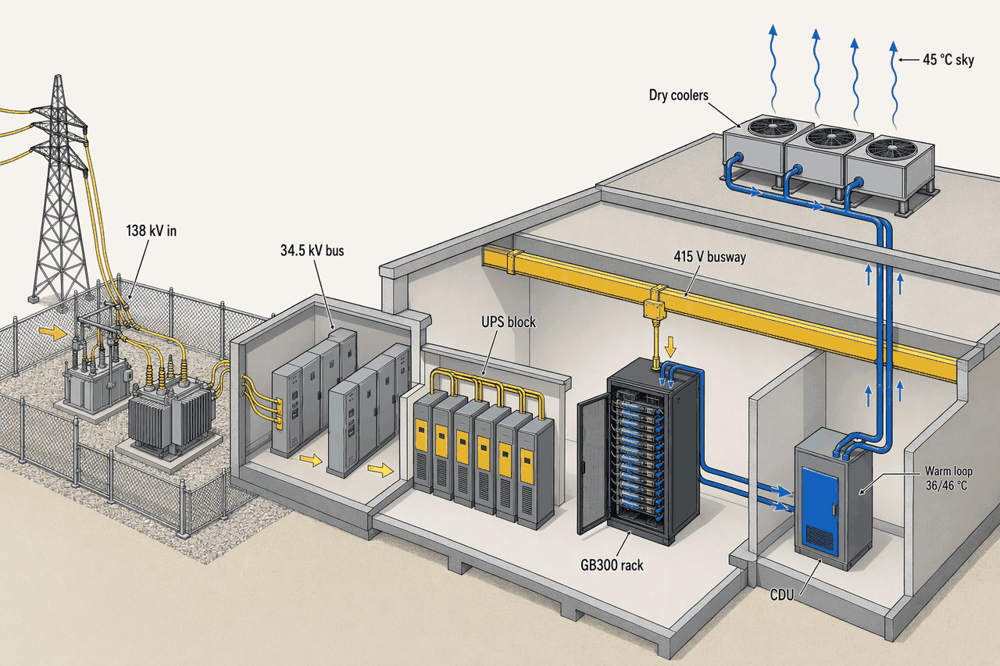
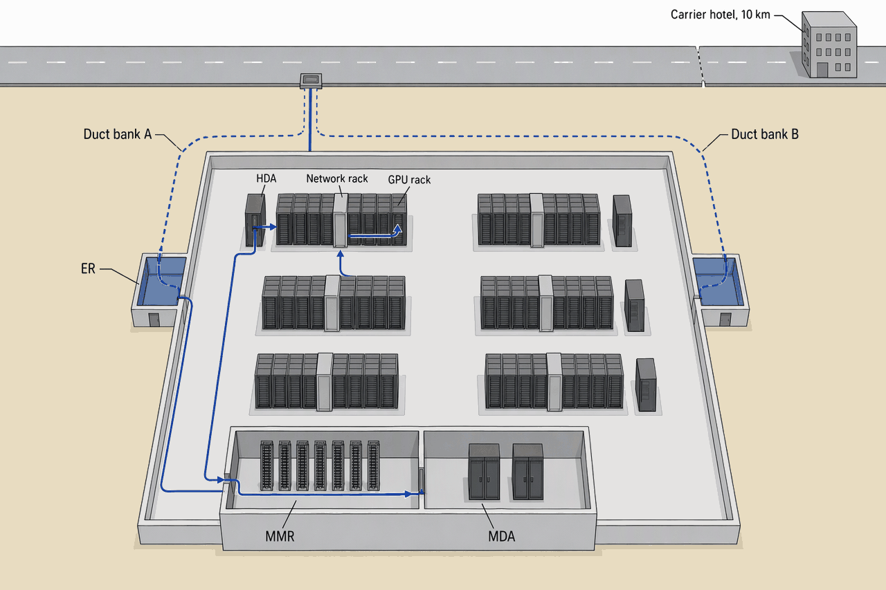

Cross-Topic Threads
Deep detail and sources: the appendix for this topic. Short version: sixty words.
Eleven chapters described one machine from eleven angles. This chapter walks the reference hall along six threads that cross every chapter boundary: a watt, a bit, a BTU, a utility failure, a dollar and the density knob that moves all of them at once. At each hand-off it names the chapter that owns the box.
- 71 W of 100What reaches IT of every 100 W at the fence, at PUE 1.4The rest is cooling, losses and lights; L3-power-1, L3-foundations
- 2 hops, 7 rooms, 3 contractsOne bit from the carrier hotel to a GPUTopic 9 counted six rooms inside the fence; the carrier hotel is the seventh
- 75%Of a 120 kW rack's heat leaves in water and never meets a compressorOnly the residual quarter takes the chilled loop; L3-cooling
- 15 s used, 10 min heldBattery spent in a utility failure; tank held for the chilled loopTwo flywheels on two clocks; L3-power-1, L3-cooling
- $450M → $1.48BCapex ex-IT, and what the hall costs to own over 15 yearsTwo thirds of the rest is electricity passed through; L3-foundations
- 15×8 → 120 kW in the same square metreA different slab, ceiling, busway, loop, fabric and lease; L3-requirements
Follow a watt
- 138 kV at the fence: two lines, revenue meter, demarcation
- raw grid power on the utility's terms; Topic 3 ends, Topic 5 begins
- 2 × 30 MVA LPTs, 138/34.5 kV, N+1
- MV that survives one transformer; Topic 5, owner-furnished
- 34.5 kV main-tie-main bus; the gensets parallel here
- MV that survives a bus section, and the grid itself; Topic 5
- Unit substation, 34.5 kV to 480Y/277 V, 2,500 kVA
- LV that survives one transformer or feeder; Topic 5
- UPS block, 2.5 MW VFI; output bus 480Y/277 V
- clean power that never saw the outage; Topic 5 ends, Topic 6 begins
- PDU, 480 → 415/240 V autotransformer
- 415 V to the row at ~56 kA; Topic 6
- Busway A or B, 1,000 A; tap-off 160–250 A
- four 60 A circuits per side, ~34.5 kW each; Topic 6
- Rack PDU at 415/240 V, or a 48 V power shelf
- 240 V to a PSU, or 54 V to a busbar; Topic 6 hands to Topic 8
- GB300 compute tray: cold plates, 72 GPUs a rack
Nine hand-offs, five owners: the utility, the owner's furnished gear, the design-builder's installation, the tenant's rack and the IT vendor's tray. Every box down the chain narrows the voltage and widens the guarantee, and the last box is the only one the tenant brought (APX-threads §1).
- IT equipment7110 MW of 14; the product
- Cooling and mechanical21chillers, fan walls, dry coolers, pumps
- Electrical losses5.5UPS 3.2; transformers and MV gear 1.5; PDU, busway and rack PDU 0.8
- Lighting, security and other2.5controls, cameras, offices
The transformers are nearly free, the UPS is the price of never seeing the grid, and in the pod a tenth of the watts become lasers before they become FLOPS. Three PUEs live in this course; APX-threads §7 says which is which.
The stage ladder, and the pod's twist
- Losses by stage, indicative: LPT 0.5% and MV gear and cable 0.4% of the 14 MW at the fence; unit substations 0.6%; UPS 3–6% of the 10 MW critical load, 4.5% taken; PDU autotransformer, busway and rack PDU about 1%; the power shelf ~94.5% at full load (L3-power-1, L3-power-2, L3-compute).
- Total electrical loss about 0.76 MW, 5.4% of the fence. At $0.07/kWh that is roughly $0.47M a year in Phase 1 (APX-threads §1).
- The pod's twist: 10–12% of the AI zone's power is network, 2.5–3 MW of 24 MW, and about 1.4 MW of that is 86,400 optics at ~16 W. Of 100 W bound for the pod, about 7 become switches and lasers before a GPU sees any (L3-network).
- The 1.4 is the design number every rating was sized to. Topic 7's Phoenix year reads ~1.25 at full load; Topic 10's Phase 1 part load reads 1.55–1.65. All three are true of different things (APX-threads §7).

The course's hero image: power in at the left, heat out at the top, one building doing both. Every chapter owns a few metres of the two lines.
Follow a bit
- Carrier hotel, ~10 km away
- the carrier's fiber, ~50 µs each way; Topic 9, the carrier owns it
- Duct bank A or B; two entries 20 m apart
- carrier cable in the owner's conduit; Topic 3 scored the routes, Topic 9 drew them
- Entrance room: carrier gear, demarcation
- operator fiber; Topic 9, the owner's room
- MMR cross-connect
- one single-mode jumper, $100–300 a month; Topic 9, the operator's revenue line
- MDA: border routers, main cross-connect
- 144-fiber base-8 trunk, ~120 m; Topic 9, the owner's backbone
- HDA, one per pod
- 2 × 400G DR4 on single-mode; owner to a retail cabinet, negotiable to a wholesale HDA; Topic 9
- Network rack, rail leaf, within two racks
- AEC ≤ 7 m, then DAC ≤ 2 m; the tenant's; Topic 9 hands to Topic 8
- NIC, one 800G port per GPU
- NVLink copper inside the rack, ~3.2 km folded; Topic 8
- GPU
The logical path is two hops; the physical one is seven rooms and three contracts, and the return trip is the same rooms in reverse. A tenant lights a pod without construction only because the star between the rooms was pre-built (APX-threads §2).
| Hop | Medium | Reach | Who owns | Chapter |
|---|---|---|---|---|
| Carrier lateral | LR4 or ZR, single-mode | 2–10+ km | Carrier | L3-network, L3-site |
| MMR jumper | Single-mode LC | One room | Operator; $100–300 a month | L3-network |
| MDA to HDA trunk | 144-fiber base-8 single-mode | ~120 m | Operator | L3-network |
| HDA to ToR or leaf | 2 × 400G DR4 | ≤ 500 m | Operator in retail; negotiable in wholesale | L3-network |
| Leaf to GPU | AEC ≤ 7 m; DAC ≤ 2 m | A rack's width | Tenant | L3-network, L3-compute |
| Inside the rack | NVLink copper, ~3.2 km folded | The rack | Tenant's vendor | L3-compute |
The medium changes at every door and so does the owner. Copper lost two thirds of its reach in one generation, and that one fact placed a network rack in every pair of GPU racks.

Two entrances so one backhoe cannot cut both, one hub, one closet per pod. The line is short on the drawing and long in contracts.
Follow a BTU
- GPU die, ~1,400 W under a cold plate
- into the coolant; Topic 8
- Rack manifold and blind-mate quick-disconnects
- TCS ~48 °C out, 40 °C back, 150–180 LPM of PG25; Topic 8 ends at the disconnect
- Overhead manifold to the CDU room
- Topic 4 owns the room and the pipe stack; Topic 7 owns the fluid
- CDU, 1 MW class, one per pod, 3–4 °C approach
- heat crosses into facility water; Topic 7
- FWS riser: 46 °C out, 36 °C back, W40
- up to the roof deck; Topic 4's structure, Topic 7's loop
- N+1 adiabatic dry coolers; reclaimed spray on peak days
- to outside air; Topic 7, the water from Topic 3
- 45 °C sky, one degree below the water
- the warm loop is done; no compressor touched it
- Side branch: 24–36 kW of residual air per rack, contained hot aisle, fan wall on 20 °C chilled water
Two loops, one heat exchanger, and every temperature chosen so the last box needs no compressor. Only the quarter that leaves as air ever meets one (APX-threads §3).
- ASHRAE recommended inlet18–27 °C
- chilled loop, supply to return20–30 °C
- FWS, W4036–46 °C
- TCS, the rack's own loop40–48 °C
- reuse grade, no customer in Phoenix45–60 °C
- chilled supply20 °C
- recommended ceiling27 °C
- chilled return30 °C
- FWS supply36 °C
- TCS in40 °C
- Phoenix peak; GB300 design point45 °C
- FWS return46 °C
- TCS out48 °C
- top of liquid return55 °C
Read left to right, the heat climbs 28 degrees in three hand-offs and arrives at the sky one degree above the sky. That one degree is the whole warm-loop argument; the chilled loop pays a compressor to close a 25-degree gap the other way.
- Warm loop: the pods' cold plates4.5dry coolers, no compressor
- Chilled: air zones at 8, 15 and 40 kW4.0fan walls and rear doors
- Chilled: pod residual air1.5the quarter that leaves the old way
- Chilled: in-hall electrical losses0.7UPS, PDU, lighting, mostly the gallery
A bit over half the heat takes five times the electricity: the chilled loop carries 58% of the heat and about 80% of the cooling energy. Every rack moved from air to the warm loop moves the ratio, which is why the campus reads better at 40 MW than Hall 1 does.
When the utility fails
- Utility drops; MV relays see loss of voltage; the EPMS stamps it on the one clockt = 0Topics 5 and 10; the racks see nothing
- UPS on battery, A and B both clean20 msTopics 5 and 6; the racks see nothing
- Chillers and dry-cooler fans stop; CDU pumps and fan walls ride the UPS (assumed, verify)0–45 sTopic 7; inlets would rise within a minute without the tank
- Six sets crank3 sTopic 5
- Rated voltage and frequency, synchronized onto the 34.5 kV bus10 sTopic 5; NFPA 110 Type 10
- Closed-transition transfer; mechanical load and rectifiers on generator; pumps and fans back15 sTopics 5 and 7; batteries recharge
- Tank carries the chilled loop while the magnetic-bearing chillers restart; the warm loop is simply running15 s to 3 minTopic 7
- Tank exhausted; the chillers have been back for seven minutes10 minTopic 7
- NOC executes the EOP for loss of utility; redundancy confirmed; tenants notified over the OOB15–30 minTopics 11 and 9
- Fuel resupply truck arrives under the 24 h contract24 hTopic 5
- On-site fuel would run out if the truck had not come48 hTopic 5
- Utility returns; hold for a stable interval, retransfer, cool-downlaterTopic 5
- RCA at the change advisory board; monthly tenant report; no credit, the bus heldmonth endTopic 11
The first fifteen seconds are Topic 5's, the next ten minutes Topic 7's, the next two days Topic 11's, and the racks see nothing at any of them. The silence is the whole course working once (APX-threads §4).
| Layer missing | First consequence | When | Chapter |
|---|---|---|---|
| Second 138 kV line | Nothing new; the engines are the source and Uptime credits no feed | t = 0, unchanged | L3-power-1 |
| Battery | Critical load drops for 10–15 s; every rack reboots; the training job restarts from a checkpoint | 20 ms | L3-power-1, L3-compute |
| The N+1 genset | One failed start leaves 13.75 MW for 14 MW; mechanical load shed | 10 s | L3-power-1 |
| 3M2 | A block fault during the event drops its rows | any second of it | L3-power-2 |
| The tank | No chilled water for 10–45 s plus ~3 min; 15 kW inlets pass 27 °C in about a minute | ~1 min | L3-cooling |
| UPS on the CDU pumps (verify) | Cold plates lose flow for 15 s; GPU time constants are seconds | 15 s | L3-cooling, L3-compute |
| OOB network | The NOC is blind; Meta, 4 October 2021 | minutes | L3-network |
| A drilled EOP | 85% of human-error outages are procedural | 15–30 min | L3-commissioning |
| Fuel contract | Dark at 48 h | 48 h | L3-power-1 |
Every layer covers a different clock: milliseconds, seconds, minutes, hours, days. Remove one and the failure lands at that clock's scale; the second utility feed is the only layer whose removal changes nothing at t = 0 (APX-threads §5).
Follow a dollar
- Option and diligence; the owner's money$0.5–2MT0–3; killed fast if power or water fail
- Interconnection application and study deposits+$0.1–0.5MT+1–3; the critical-path clock starts
- Slot deposits, 10–30% on ~$40–80M of owner-furnished gear+$5–15MT+3–6; ratings frozen at the 60% one-line
- Land close+$15–30MT+6–9; before permits are in hand
- Construction agreement: CIAC and security+$10–30MT+9–18; cumulative $33–83M, a tenth of capex
- Permits, design, community package+$2–5MT+6–18; the hearing
- Build: Phase 1 balance~$180–230M (verify)T+18–38; campus items plus Hall 1, see APX-threads §7
- Commissioning, Levels 3–5$2–10MT+38–42; 0.5–2% of construction
- Substantial completionhalf of 5% retainage releasedT+42; delay LDs stop, workmanship warranty starts
- Final completionthe other halfT+54; record documents delivered
- Operating cost$65M a year at full buildPhase 1 about $20–25M a year; electricity passed through
- Tenant IT refreshthe pod's $600M is the tenant'syears 3–5, then again
- Mid-life MEP refresh$54Mabout year 12; ~12% of capex
- Fifteen years$1.48B; $1.03B at 8%undiscounted, and as an owner models it
Money follows proof in steps, and each step names who holds it. A tenth of capex is committed before the utility has a date; the last retainage arrives a year after the hall is live (APX-threads §6).
- Capex ex-IT450electrical 54%, mechanical 22%, shell 14%, GC 10%; security, fire and monitoring 3–6% inside those
- Electricity51515 × $34.3M; mostly passed through to tenants
- Non-power opex458maintenance 203, staff 117, other 90, insurance 48
- Mid-life MEP refresh54once, about year 12
The building is a third of what it costs to own; two thirds of the rest is electricity passed through. Discounting at 8% halves the weight of the future.
The density ripple
| Dimension | 8 kW row | 120 kW pod | What changes | Chapter |
|---|---|---|---|---|
| Floor on the footprint | 170 psf on a 250 psf slab | 435 psf on a 400 psf pad; ~1,500 kg wet | The slab, not the tile | L3-building |
| Overhead | Cable-and-RPP, one tray | 6 m clear: busway, fiber raceway, copper tray, manifolds | Three trades in one ceiling | L3-building, L3-power-2, L3-cooling, L3-network |
| Power feed | RPP 400–600 A; one 24–32 A circuit per side; 20–40 racks | Dual 1,000 A busway; four 60 A circuits per side; 2–4 racks per run | Ampacity up 2–4×, racks per run down 10× | L3-power-2 |
| Racks per MW | 125 | 8 | The AI band carries 61% of the load on 20% of the racks | L3-requirements |
| Cooling | Containment on fan walls, ~1,250 CFM, 20 °C chilled | Cold plates, 150–180 LPM on W40, plus a quarter to air | A second loop and a CDU room | L3-cooling |
| Network | ToR or EoR, copper in the rack, a few fiber uplinks | A network rack per two GPU racks; 72 fibers per rack; 10–12% of pod power | Reach rewrote the row | L3-network |
| Fire | Pre-action | Pre-action plus leak cable and coolant shut-off under 60 s | A leak is the likelier event | L3-security-monitoring |
| Operations | Filters and hot spots | Coolant chemistry, 25–50 µm filtration, CDU MOPs | A chemistry lab in the ops plan | L3-commissioning |
| Cost per MW | $10–12M | $15–20M | About 1.5× | L3-foundations |
| IT clock | 5+ years | 2–3 years | Three generations in one lease | L3-compute |
| Lease | Per rack, power bundled | Per kW turnkey, with a coolant SLA | The lease carries density, not the facility | L3-foundations, L3-compute |
One number chosen in Topic 2 rewrote a row in every chapter after it. Fifteen times the power in the same square metre is a different slab, ceiling, busway, loop, fabric, procedure and lease (APX-threads §8).
- 15×Power per rack, 8 → 120 kWThe knob itself; L3-requirements
- 2.6×Floor load on the footprint, 170 → 435 psfWhy the slab is concrete all the way down; L3-building
- 125 → 8Racks per MWWhy the AI band drives the megawatts; L3-requirements
- 40 → 2Racks per feed runWhy Topic 2 refused to defer the pod busway; L3-power-2
- 1.4–1.6 → 1.1–1.2Regime PUE, room air to warm-water liquidEvery rack moved to the warm loop lowers the ratio; L3-cooling
- 1.5×Capex per MW, $10–12M → $15–20MMechanical grows, shell and electrical shrink as shares; L3-foundations
The landing page's explorer is this thread live. Its rules were calibrated by Topic 2 (thresholds 20, 45, 80 kW), Topic 5 (UPS blocks on IT, gensets on IT × PUE, four grid tiers), Topic 7 (PUE and liquid share by regime) and Topic 8 (what fits, the 1,400 kg vendor floor). Drag the slider and watch the eleven chapters move.
Of 100 W at the fence, how many reach IT at PUE 1.4, and which three stages between fence and rack lose the most?
About 71 W. Cooling and mechanical take about 21 W, the largest overhead; among electrical losses the UPS double-conversion is first at ~3.2 W, then the transformers and MV gear at ~1.5 W, then PDU, busway and rack PDU at ~0.8 W. Lighting, security and other take the remaining ~2.5 W.
Name the seven rooms a bit crosses from carrier hotel to GPU, where the owner's cabling stops in a retail and a wholesale pod, and why a network rack stands in every pair of GPU racks.
Carrier hotel; entrance room via duct bank A or B; MMR; MDA; the pod's HDA; the network rack holding the rail leaf; the GPU rack. In a retail pod the owner's cabling reaches the cabinet; in a wholesale pod it stops at the MDA, negotiable to the HDA, and the cage is the tenant's. At 800G passive copper reaches about 2 m and retimed copper about 7 m, so a same-rail leaf must stand within two racks of its GPUs.
Give the temperature at each hand-off from cold plate to sky, and name the one part of a 120 kW rack's heat that meets a compressor.
TCS about 48 °C out of the rack and 40 °C back; across the CDU at a 3–4 °C approach into the FWS at about 46 °C, returning at 36 °C; dry coolers reject to outside air at up to 45 °C. Only the 24–36 kW per rack of residual air, taken by the fan wall on 20 °C chilled water through the yard chillers, meets a compressor.
At 20 ms, 15 s, 3 min and 10 min into a utility failure, what carries the critical load and what carries the chilled loop, and what does the NOC do at minute 15?
20 ms: battery through the UPS inverter carries the critical load; the chilled loop is coasting on the tank with chillers stopped. 15 s: the generators carry everything after closed transition; the tank still carries the chilled loop while chillers restart. 3 min: generators; the magnetic-bearing chillers are back and the tank is no longer needed. 10 min: generators; the tank's design duration ends with the chillers long since running. At minute 15 the NOC executes the loss-of-utility EOP, confirms redundancy is restored and notifies tenants over the OOB.
How much is committed at the construction agreement, who carries a late transformer, and when is the last half of retainage paid?
About $33–83M cumulative, roughly a tenth of capex. The owner carries a late transformer, because it bought the slot as owner-furnished equipment and the contract names late OFE as an owner delay. The last half of the 5% retainage is released at final completion, about T+54, twelve months after substantial completion.
Name four things that change between an 8 kW row and a 120 kW pod and the chapter that owns each, and say which explorer rule Topic 5 corrected.
Any four of: floor load 170 → 435 psf (Topic 4); feed from one 24–32 A circuit on an RPP to four 60 A circuits per side on dual 1,000 A busway (Topic 6); cooling from fan-wall containment to cold plates on a warm loop plus a residual quarter to air (Topic 7); a network rack per two GPU racks and 72 fibers per rack (Topic 9); leak cable with coolant shut-off (Topic 10); coolant chemistry and CDU MOPs (Topic 11); $10–12M to $15–20M per MW (Topic 1); a 2–3 year IT clock (Topic 8). Topic 5 corrected the generator rule: gensets are sized on IT × PUE at ~2.75 MW each plus one, not on IT like the UPS blocks, and the grid bands became four tiers.